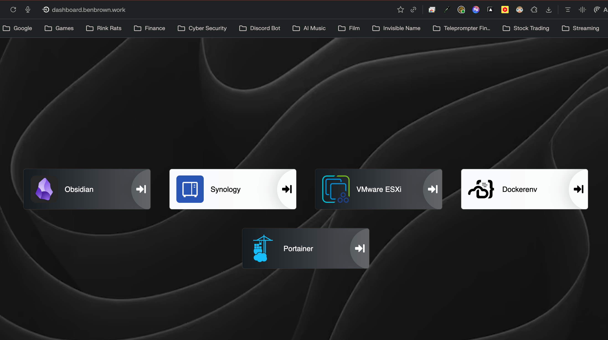
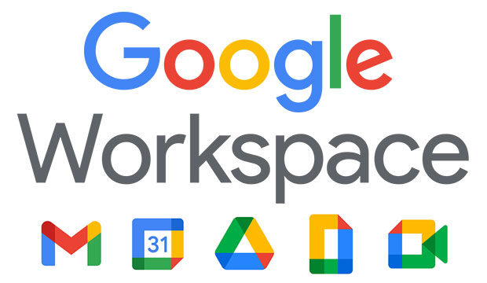

Live Event & Video Production
Multi-camera Director · DaVinci Resolve Colorist · Technical Director
Bringing broadcast-grade production in-house for distributed teams
Brought corporate video production in-house at Aptive Environmental, replacing outside vendors and producing live, multi-camera company-wide events end-to-end — quarterly YouTube Town Halls (50–4,000+ viewers), Encore Global Operations Summits, and monthly Technology and Sales all-hands.
End-to-end production: pre-production planning, on-shoot direction, and post-production logistics including run-of-show, equipment, and deliverable archival.
Crew leadership: directed 3–10 person crews across camera, audio, lighting, and graphics; liaised between executives, marketing, and external partners.
Technical direction: TD for weekly, monthly, and quarterly Zoom webinars — run-of-show ownership and live Q&A moderation.
Outcome: faster turnaround for marketing, executive-ready broadcasts on a predictable cadence, and roughly $75K a year reinvested back into the business.
Projects & Systems
Post Production at Scale
DaVinci Resolve Remote Render Farm
Deployed DaVinci Resolve remote render servers on a vSphere stack to offload exports from editor workstations, cutting render times and unblocking the marketing content pipeline.
Faster turnaround: editors stay on the timeline while renders ship in the background.
Predictable delivery: queued jobs hit deadlines for town halls and weekly all-hands.
Archive backbone: tied into Synology NAS workflows for project storage, legal hold, and eDiscovery — replacing a SaaS backup vendor and saving ~$50K/year.
Secure Remote Access
Cloudflare Tunnels for Production Administration

Cloudflare Tunnels expose render servers, lab systems, and production tooling through a single identity-aware entry point so I can administer them from any venue without exposing raw ports.
Single entry point: centralized access to production systems without exposing raw ports.
Segmentation: VLAN isolation and least-privilege rules contain experiments.
Always-on access: manage the render farm and lab securely from any shoot location.
Browser Security
Chrome Browser Cloud Management

Implemented managed Chrome policies without requiring profile login, preserving security posture while respecting licensing constraints — the same project discipline I apply to production: scope, schedule, stakeholders, hand-offs.
Challenge
Shared accounts created sync instability when 700+ users signed in and out.
Security risk increased with widely shared credentials.
Budget constraints limited individual Google Workspace accounts.
Solution
Structured OUs and security policies tied to devices, not shared accounts.
Enrollment token embedded in the golden image for automatic registration.
Users sync personal accounts while remaining under corporate controls.
Production management: run-of-show ownership, 3–10 person crew direction, deliverable archival.
Identity & access: Okta SSO (SAML, SCIM, RBAC), Google Workspace OUs, GAM automation for 4,000+ users.
Infrastructure: UniFi across 74 field offices, VMware vSphere, Cloudflare Tunnels, Synology NAS archival.
Audio / Video Showcase
Selected work from the in-house production slate — color grading in DaVinci Resolve, motion graphics and stingers for live shows, run-of-show planning for company-wide events, and produced training content that ships internally.
Color Grading
Blackmagic RAW workflows in DaVinci Resolve built for cinematic sales reveals and training productions.
Enablement & Training Content
Produced internal-facing walkthroughs that pair production craft with technical accuracy — here, making passwordless adoption approachable for employees and IT stakeholders.
Live Production
Produced live streams for company town halls, quarterly business reviews, and sales or technology all-hands events reaching 50 to 4,000+ employees across in-person and remote audiences.
Live Stream Town Hall — Gym
Sales TL Event — NC
Resume Preview
Preview my latest resume below or download a copy to share with your team.
Production leadership: live multi-camera events, technical direction, crew & vendor coordination.
I am open to live event production, video production, and technical director roles — including hybrid roles that pair production craft with the systems work that keeps it running. Reach out if you want a partner who can ship broadcast-grade work safely and at scale.